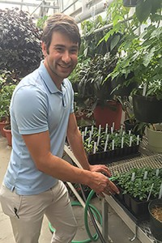
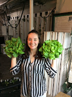
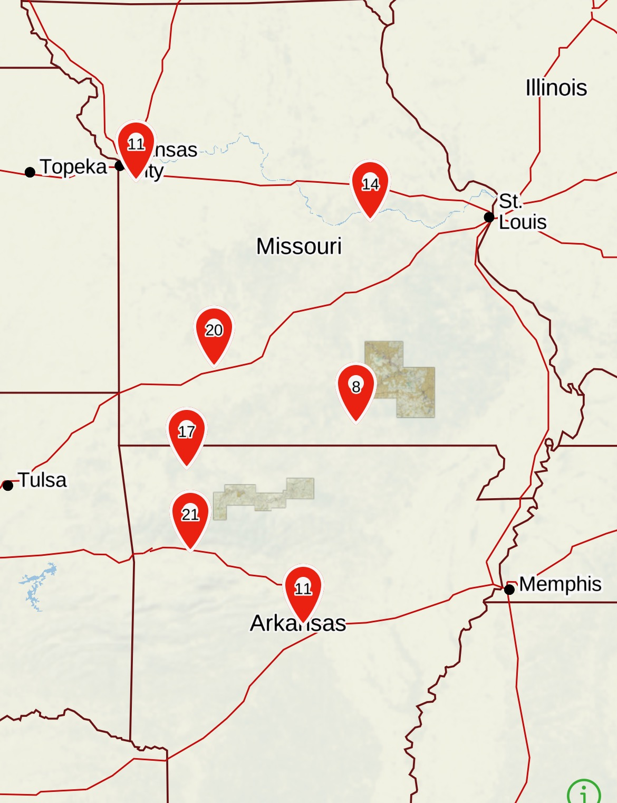

About
Undergraduate Degree
I received my Bachelors in Plant Science with an emphasis on horticulture from Missouri State University (MSU) in 2016. My journey into science started with a focus on sustainable urban farms as a way to provide food security to inner city food deserts.
While at MSU I worked in the Karl’s Hall greenhouse and served as the Campus Garden Manager. I also worked with the Students for a Sustainable Future and the faculty Sustainability Advisory Committee to manage and find funding through two large initiatives. The first project secured funding to update the environmental systems in the Karl’s Hall greenhouse. The second project began a collaborative project with the Darr College of Agriculture and the MSU Dining Services to install and maintain hydroponics system to provide students with fresh produce in the dining halls. I had more practical experience managing budgets when I was elected treasurer of the Horticulture Club.


MSU undergraduate projects.
I met incredible professors during this time, and my interests moved beyond horticulture and into molecular biology. During this time, I took a Plant Biotechnology class and met the wonderful Dr. Wenping Qiu who offered me a place in his lab as a research assistant as a result of my achievments.
Masters Degree
In 2018, I graduated with a Masters in Plant Science from MSU. During this time I worked with the emerging grapevine virus, Grapevine vein clearing virus (GVCV), that Dr. Qiu’s lab team discovered as it began spreading through Missouri vineyards. Yes, Missouri has vineyards.
Before I came to the lab, there was no conclusive evidence from where this virus emerged. A lab mate of mine, who developed into a good friend, Sylvia Petersen had previously identified the virus in some wild relatives of cultivated grapevine, so I somehow convinced Dr. Qiu to let me take off sampling and collect many wild and cultivated plants from accross Missouri and Arkansas. I even stopped into our charming vineyards more than once.
